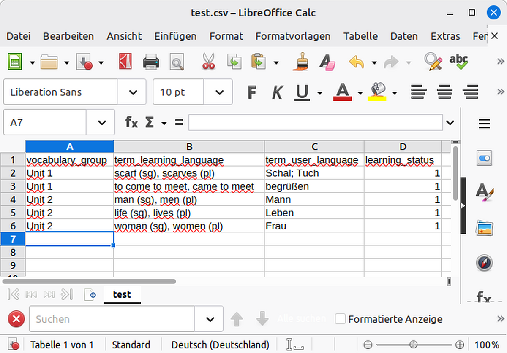

📊 Vokabelsets mit Excel oder OpenOffice erstellen
Die Erstellung eigener Listen in einem Tabellenprogramm ist der klassische Weg, um größere Mengen an Vokabeln schnell und fehlerfrei vorzubereiten.
1. Tabelle vorbereiten
Erstellen Sie eine neue Tabelle und legen Sie in der ersten Zeile genau diese vier Spaltennamen an:
vocabulary_group (z.B. "Unit 1")
term_learning_language (Das Wort, das gelernt werden soll)
term_user_language (Die Übersetzung)
learning_status (Standardmäßig "0")
term_learning_language (Das Wort, das gelernt werden soll)
term_user_language (Die Übersetzung)
learning_status (Standardmäßig "0")
2. Vokabeln eintragen
So sollte Ihre Tabelle in Excel oder LibreOffice Calc aussehen:

3. Als CSV speichern
Damit der Converter die Datei lesen kann, muss sie im CSV-Format gespeichert werden:
- Wählen Sie Datei → Speichern unter.
- Wählen Sie als Dateityp CSV (Trennzeichen-getrennt).
- Achten Sie nach Möglichkeit auf die Codierung UTF-8, damit Umlaute korrekt übernommen werden.
Nächster Schritt:
Sobald Sie Ihre CSV-Datei fertig haben, können Sie diese in unserem Converter umwandeln:
Sobald Sie Ihre CSV-Datei fertig haben, können Sie diese in unserem Converter umwandeln: